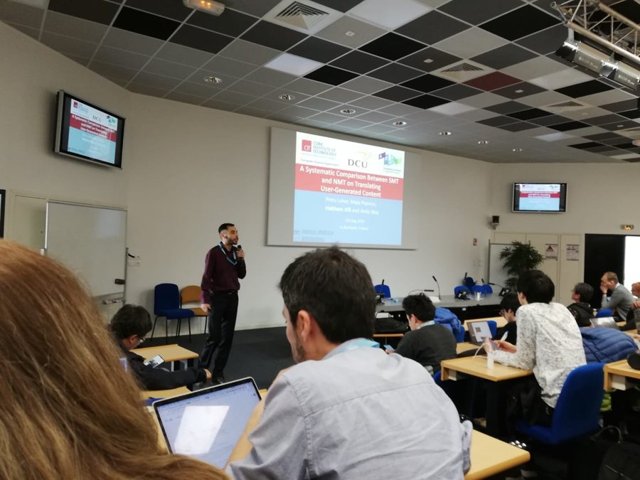
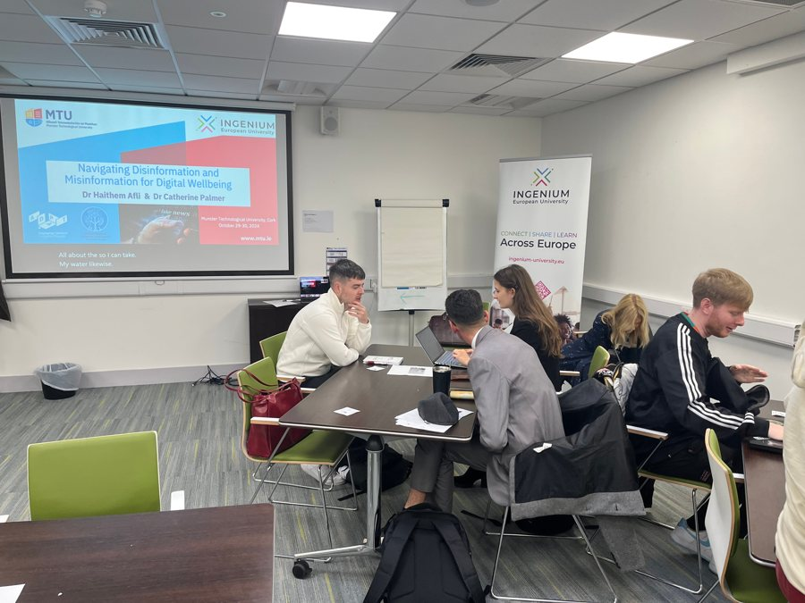
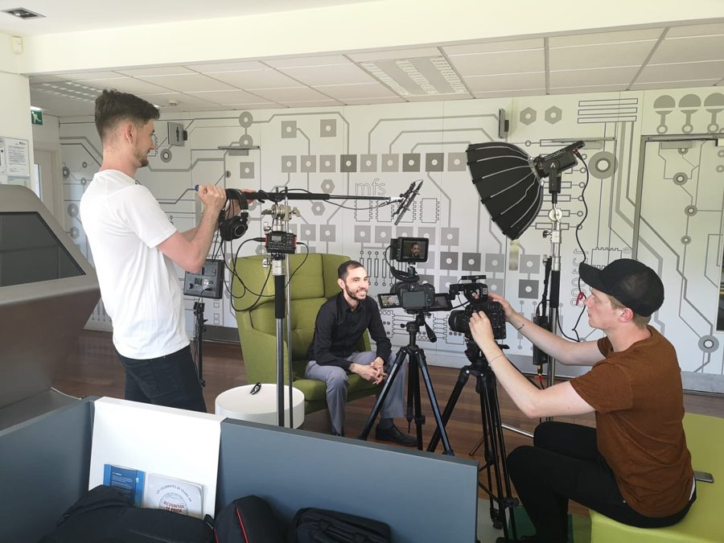
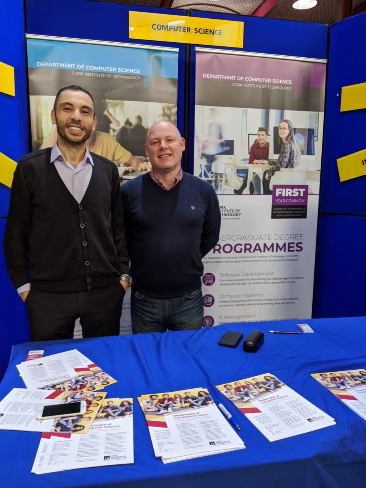
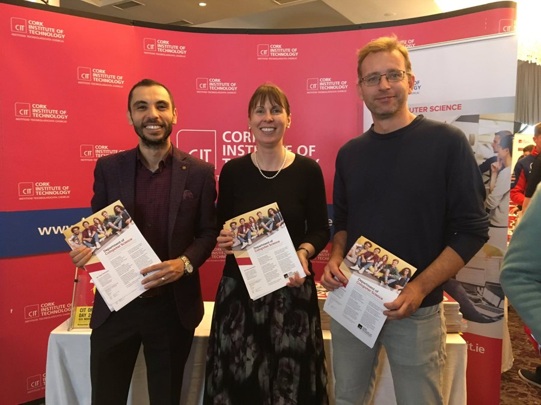
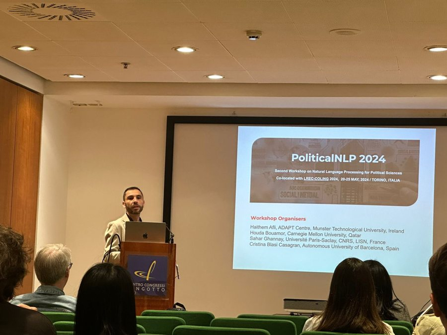
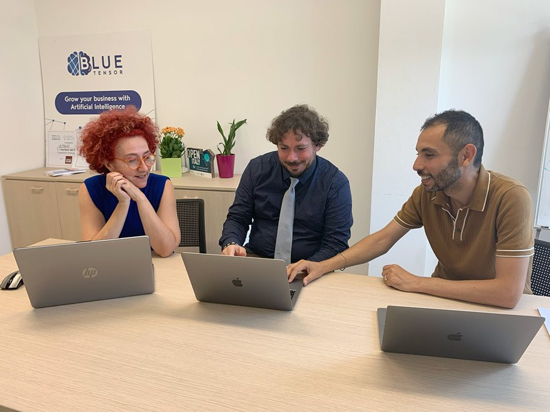
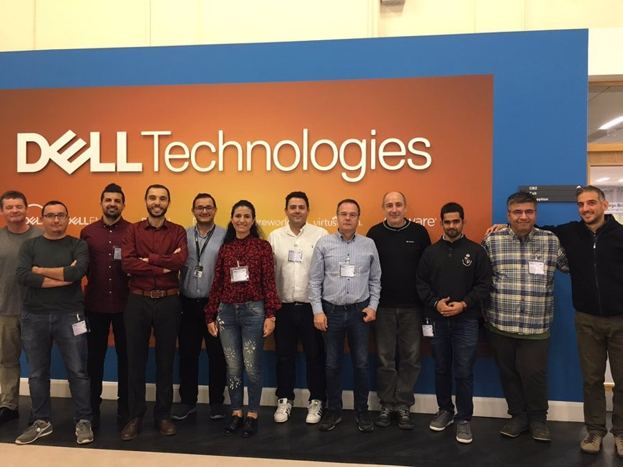
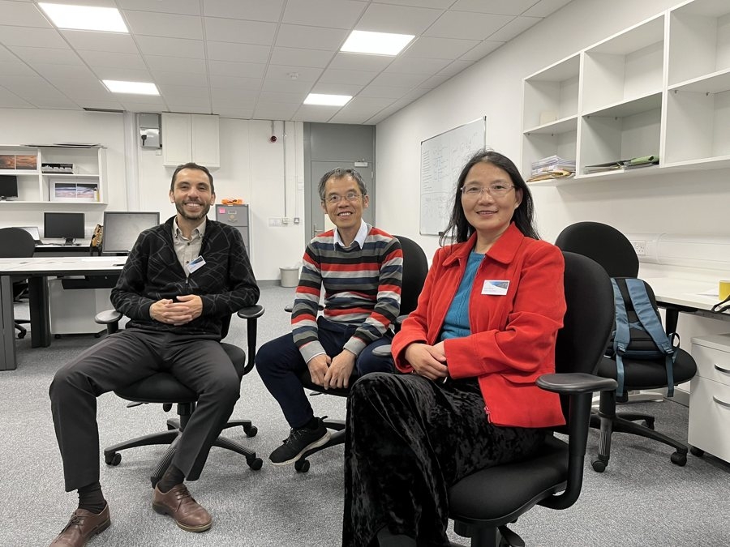
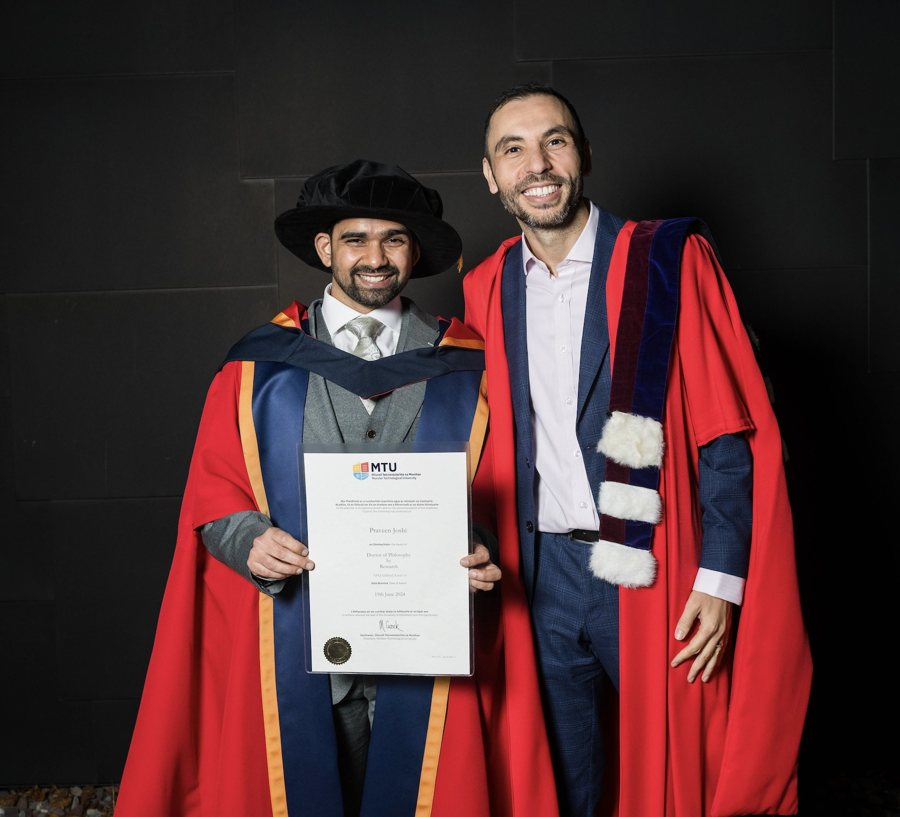

Selected photographs from professional academic activities, supplied by Dr Afli.
Research conferences
Presenting research at the IEEE International Conference on Bioinformatics and Biomedicine 2025.Invited talk at the UK Computational Intelligence Conference (UKCI) 2024.Research presentation at Wuhan University, 2025.Research seminar presentation.
Teaching

Teaching artificial intelligence and machine learning at MTU.

Workshop on navigating disinformation and misinformation for digital wellbeing within the INGENIUM European University Alliance.

Promoting artificial intelligence education at MTU.

Promoting computer science education and outreach.

Seminar presentation on natural language processing and artificial intelligence.
Public engagement
Public discussion on artificial intelligence and ageing as part of the Age-Friendly AI initiative.Educational session on generative AI and digital futures, delivered with the MTU Access Service.Panel contribution at the Cantillon Conference, 2022.
Research collaborations
Work on the ITFLOWS project on trustworthy AI for migration studies.Political NLP workshop, 2022 — an interdisciplinary forum bridging NLP and political science.

Political NLP workshop, 2024, at LREC-COLING.

Industry collaboration with BlueTensor on responsible language technologies.

Industry engagement and research collaboration.

Research collaboration with colleagues at Ulster University.Engagement with the technology industry, 2024.
Supervision and academic milestones

Celebrating the doctoral graduation of Dr Praveen Joshi, supervised at MTU.